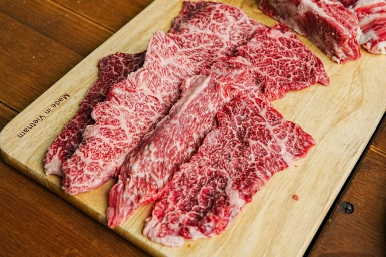

1. Salchi Sal (살치살) - Beef Chuck Flap Tail
Chuck Flap Tail is one of the most famous cuts in Korea. It is famous for being the fattiest meat in Korean BBQ. The distinctive feature of this cut is that its marbling ratio is very high. Sometimes there is more fat than meat. This cut should be grilled until medium.